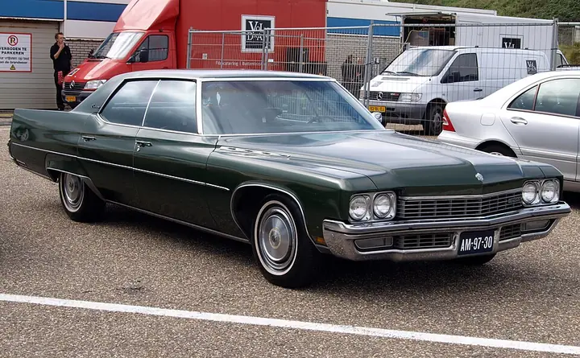
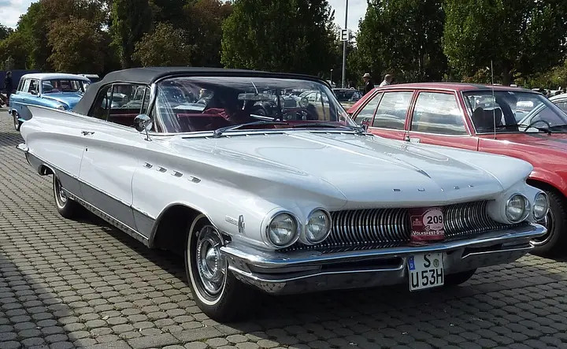

Buick Electra
Sixth generation (1985–1990) · 1984–1990
Abstract
This generation of the Buick Electra was built 1984–1990 in Wentzville, Missouri, Wentzville Assembly. Body styles: 4-door sedan, 2-door coupe. Layout: Transverse FF layout. Designed by Buick Studio One Team, led by Bill Porter under the design direction of Irv Rybicki.


1Specifications
| Production | 1984–1990 |
|---|---|
| Model years | 1985–1990 |
| Assembly | Wentzville, Missouri, Wentzville Assembly |
| Designer | Buick Studio One Team, led by Bill Porter under the design direction of Irv Rybicki |
| Body style | 4-door sedan2-door coupe |
| Layout | Transverse FF layout |
| Platform | C-body |
| Engine | Gasoline:3.0 L Buick V63.8 L Buick V6Diesel:4.3 L Oldsmobile V6 |
| Transmission | 4-speed THM440-T4 automatic |
| Wheelbase | 110.8 in |
| Length | 1985–86: 197.0 in1987: 197.4 in1988–90: 197.0 in |
| Width | 1985–86: 72.4 in1987: 72.1 in1988–90: 72.4 in |
| Height | 1985–86: 54.3 in1987: 54.2 in1988–90: 54.3 in |
| Weight | 3300–3600 lb |
| Related | Cadillac Sixty SpecialCadillac FleetwoodCadillac DevilleOldsmobile 98Buick LeSabreOldsmobile 88 |
2Previous generations

_(cropped).jpg){kind=link}

.JPG){kind=link}

_(cropped).jpg){kind=link}



.jpg){kind=link}
3Generation by generation
Length −13% from the first to the last
1959–1960 19595,725 mm
1961–1964 19615,568 mm
1965–1970 19655,692 mm
1971–1976 19715,745 mm
1977–1984 19775,641 mm
1985–1990 19845,004 mm
Weight −30% from the first to the last
1959–1960 19592,132 kg
1961–1964 19611,950 kg
1971–1976 19712,087 kg
1977–1984 19771,724 kg
1985–1990 19841,497 kg